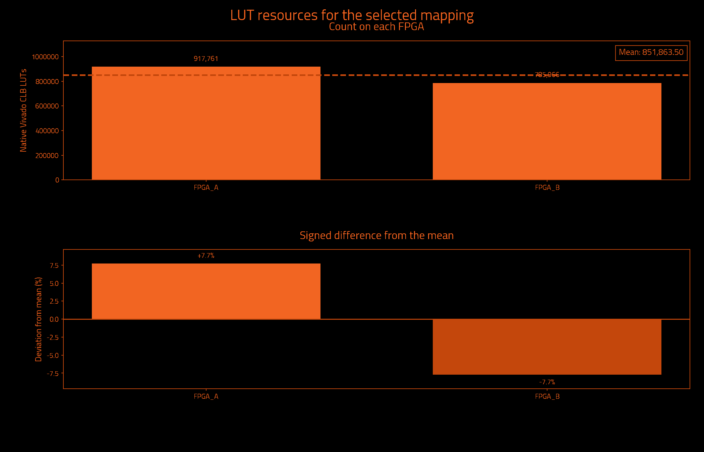
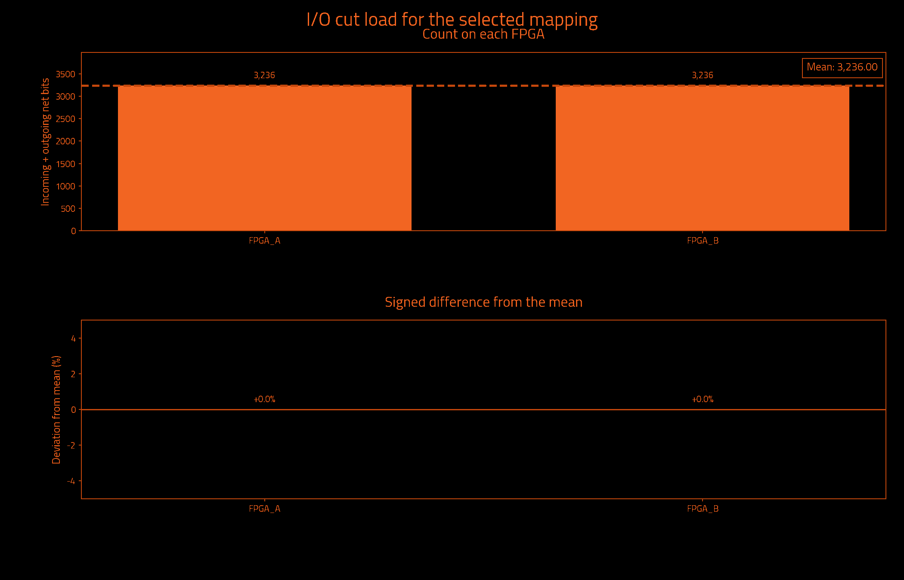
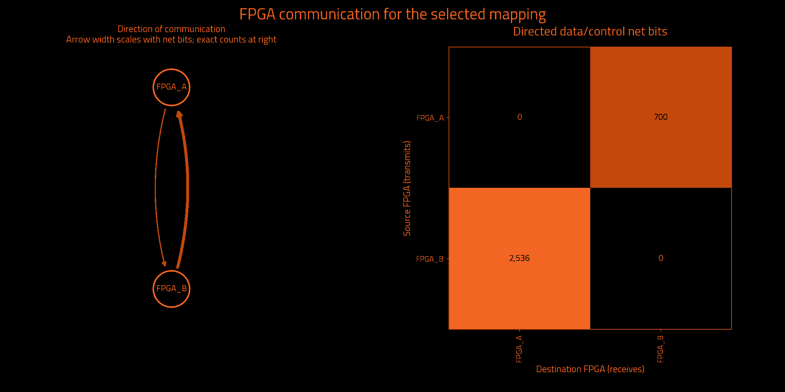

Historical measurements preserved by exact ownership equivalence · mapping.txt
Historical metrics preserved by exact ownership equivalence; not a fresh Vivado measurement.
| Selected partition | Result | Search | Result |
|---|---|---|---|
| FPGAs | 2 | Iterations requested | Unavailable |
| Native Vivado CLB LUTs | 1,703,727 | Iterations attempted | 3 |
| Unique data/control cut net bits | 3,236 | Selected iteration (zero-based) | 0 |
| Directed data/control net-bit pairs | 3,236 | Target board | j4.phd |
| Measurement | Result | Measurement | Result |
|---|---|---|---|
| Wall time | Unavailable | Observed CPU time | Unavailable |
| Average CPU cores | Unavailable | Average CPU use (one core = 100%) | Unavailable |
| Peak sampled process-tree memory | Unavailable | Frontend peak memory | Unavailable |
| Child processes observed | Unavailable | Sampling interval | Unavailable |
Measured through: Unavailable. CPU covers the frontend and observed descendants; sampling can miss short-lived work. Process-tree memory sums may count shared pages more than once.
No runtime measurement supplied.
Observed CPU time is a lower bound when short-lived processes escape sampling. Windows-host sampling excludes work inside WSL. Process-tree memory sums may count shared pages more than once.
| Logical FPGA | Native Vivado CLB LUTs | Device LUT utilization | Hard LUT cap | Outgoing net bits | Incoming net bits | Total I/O net bits |
|---|---|---|---|---|---|---|
| FPGA_A | 917,761 | 10.848% | 6,345,216 | 700 | 2,536 | 3,236 |
| FPGA_B | 785,966 | 9.290% | 6,345,216 | 2,536 | 700 | 3,236 |
| Logical FPGA | Target device | Registers | Block RAM tiles | DSP blocks | UltraRAM blocks |
|---|---|---|---|---|---|
| FPGA_A | xcvp1902 | 227,311 | 0.0 | 0 | 0 |
| FPGA_B | xcvp1902 | 537,677 | 316.5 | 459 | 0 |



| Measurement | Before local cleanup | Selected result |
|---|---|---|
| Worst minimum physical link hops without a register | 3 | 3 |
| Worst FPGA boundary crossings without a register | 3 | 3 |
| Extra crossings summed over modeled endpoints | 4,091 | 1,886 |
| Combinational primitives on transit paths | 19 | 1,972 |
| Directed hypergraph transfers | 2,942 | 3,236 |
| Sampled source timing paths scored | Unavailable | 1,000 |
| Weighted cost on sampled source timing paths | 0.0 | 0.0 |
| Signal category | Unique crossing net bits | Directed net-bit pairs |
|---|---|---|
| Data and functional synchronous control | 3,236 | 3,236 |
| Clock only | 1 | 1 |
| Reset only | 2 | 2 |
| Iteration | Result | Worst register-free crossings | Extra endpoint crossings | Transit primitives | Hypergraph transfers | Utilization imbalance |
|---|---|---|---|---|---|---|
| 0 | Selected best accepted mapping | 3 | 1,886 | 1,972 | 3,236 | 7.74% |
| 1 | Rejected: Command failed (1); C:\Users\Wrelks\Desktop\upgrade_partitioner_handle_large_designs\work\final_j4_matrix_controller_v3\evidence\NVDLA_k2\installed_serial_default_20261014_e9c4d7a8\candidate_01\partition.log + Initialize LP Refiner = 4.91e-05 s + Label Propagation = 0.0306004 s + Initialize FM Refiner = 1.82e-05 s + FM = 0.135804 s + Initialize Data for Unc. FM = 0.0238767 s + Collect Border Nodes… | Unavailable | Unavailable | Unavailable | Unavailable | Unavailable |
| 2 | Rejected: Command failed (1); C:\Users\Wrelks\Desktop\upgrade_partitioner_handle_large_designs\work\final_j4_matrix_controller_v3\evidence\NVDLA_k2\installed_serial_default_20261014_e9c4d7a8\candidate_02\partition.log + Initialize LP Refiner = 4.3e-05 s + Label Propagation = 0.0264582 s + Initialize FM Refiner = 1.98e-05 s + FM = 0.134577 s + Initialize Data for Unc. FM = 0.0235077 s + Collect Border Nodes … | Unavailable | Unavailable | Unavailable | Unavailable | Unavailable |
| Measurement | Meaning |
|---|---|
| Worst minimum physical link hops without a register | Lower bound from the declared topology, not a routed transport path. |
| Worst FPGA boundary crossings without a register | Largest ownership-change count on a modeled combinational path. |
| Extra crossings summed over modeled endpoints | Crossings beyond the first, summed over endpoints; not a distinct-net count. |
| Combinational primitives on transit paths | Logic that receives and forwards a remote signal without register capture. |
| Directed hypergraph transfers | Destination partitions beyond the first, summed over modeled hyperedges. |
| Sampled source timing paths scored | Exported Vivado timing samples, not all-path timing closure. |
| Weighted cost on sampled source timing paths | Relative ranking cost, not measured transport delay or DUT frequency. |
I/O cut load counts one outgoing multicast net once at its source and once at each receiving FPGA. Clock-only and reset-only nets are separate. Counts describe logical payload, not physical package pins or a pinmux ratio. External top-level ports have no invented FPGA home. Hypergraph transfers differ from the full net-bit census.
Deviation is 100 × (FPGA count / mean − 1); all-zero designs have 0% deviation. Device utilization and hard LUT caps are separate. Before local cleanup means this selected candidate before refinement, not necessarily the first iteration. More iterations can improve a result; the best accepted candidate is retained.
Timing sample coverage: exported sampled native setup paths only; not all-path STA. Path model: primitive conservative data arcs; top IO has no FPGA home. These are source-model measurements, not achieved hardware timing.
| Logical FPGA | Physical location | Selected direct neighbors |
|---|---|---|
| FPGA_A | C01/S01/E | 1 |
| FPGA_B | C01/S01/F | 1 |
| FPGA | Neighbor | Declared lanes | Wires at topology minimum compression |
|---|---|---|---|
| FPGA_A | FPGA_B | 16 | 1,024 |
The communication matrix shows signal demand. Declared links guide optimization; transport routing and physical bandwidth allocation happen later.
Resources describe original synthesized logic; future wrapper and transport resources are excluded. Mapping format, ownership and hard capacity checks are acceptance gates. Downstream regroup and hardware validation are separate.
{
"status": "HISTORICAL_METRICS_PRESERVED_BY_EXACT_OWNERSHIP_EQUIVALENCE",
"backend_version": "1.6.2",
"partition_preset_requested": "default",
"frontend_sha256": "d4dd69ef7849e0e5770e1ea0173f2106b1f1ec13ccc9303f7e8eaf9f3bc7237c",
"native_timeout_seconds": 7200.0,
"native_timeout_scope": "persistent checkpoint startup and each resource request; batch commands unaffected",
"topology_sha256": "81cbe6e83afb0c4b396c376a11ce80bc5e221d12b6c8992712e00efac17c3704",
"topology_source_sha256": "6f393e7eee76cbf20cd96e46f52c8c0a34be2365c7222aa6cf7abfe87c7e1b83",
"fpga_count": 2,
"native_backend_invoked": true,
"preferred_native_balance": 0.2,
"selection_policy_version": 3,
"native_balance_absolute_tolerance": 1e-12,
"effective_solver_epsilon": 0.3,
"effective_refiner_scalar_balance": 0.3,
"native_balance_search_envelope": 0.3,
"target_capacity_dependency_manifest_sha256": "18a3ac71857350176b8d15449e6cf21f106a9c902bd439a5a7d9d722c218d2c3",
"target_capacity_dependencies_sha256": {
"C:\\Users\\Wrelks\\Desktop\\upgrade_partitioner_handle_large_designs\\RapidWright\\scripts\\partition\\target_capacity.py": "652db231c4c19cfb2aa7bea140c1184d6f51162be857358b94152b3a2661f992",
"C:\\Users\\Wrelks\\Desktop\\upgrade_partitioner_handle_large_designs\\topologies\\j4_board_topology.json": "6f393e7eee76cbf20cd96e46f52c8c0a34be2365c7222aa6cf7abfe87c7e1b83",
"C:\\Users\\Wrelks\\Desktop\\upgrade_partitioner_handle_large_designs\\topologies\\j4_board_topology.json.targets.json": "25db82ebe61166d1d1998042eaa07ad9c843238119e5dd6e16e70695249afcd4",
"C:\\Users\\Wrelks\\Desktop\\upgrade_partitioner_handle_large_designs\\RapidWright\\scripts\\partition\\part_catalog\\vivado_2025_1_parts.tsv": "a402de944fbd660743f6a7ff12403060e886627439826186600da78618e6a1fe",
"C:\\Users\\Wrelks\\Desktop\\upgrade_partitioner_handle_large_designs\\RapidWright\\scripts\\partition\\part_catalog\\vivado_2025_1_parts.tsv.identity.json": "c5937f61bb02a289745eee9e8cc359b56692ed908e206cf549830da035957707"
},
"effective_logical_balance": 0.5,
"logical_balance_policy": "automatic_uniform_or_unspecified_native_caps",
"logical_balance_requested": null,
"logical_resource_capacities_explicit": false,
"engine_manifest_sha256": "b64272b8c469cffdf98ea76b1afcae5799a0fa0bc63d855ece820af18d841f8a",
"source_pair_association": {
"version": 1,
"mode": "supplied_manifest_legacy",
"original_receipt": "C:\\Users\\Wrelks\\Desktop\\upgrade_partitioner_handle_large_designs\\LSUT_2\\work\\partition_experiment\\nvdla_full_reference\\export_receipt.json",
"receipt_snapshot": "C:\\Users\\Wrelks\\Desktop\\upgrade_partitioner_handle_large_designs\\work\\final_j4_matrix_controller_v3\\evidence\\NVDLA_k2\\installed_serial_default_20261014_e9c4d7a8\\inputs\\source_pair_receipt.json",
"original_receipt_sha256": "aa29ec86bea71021df83afbc9f1806a2145f95c95b673e6d3d90de705f6885df",
"receipt_snapshot_sha256": "aa29ec86bea71021df83afbc9f1806a2145f95c95b673e6d3d90de705f6885df",
"input_edif": "C:\\Users\\Wrelks\\Desktop\\upgrade_partitioner_handle_large_designs\\LSUT_2\\work\\partition_experiment\\nvdla_full_reference\\post_synth.edf",
"input_edif_sha256": "cc2a209e3f7f2235e9aa88b31fae398bbd614fa88f258b8731ed23ca6d533c8a",
"checkpoint": "C:\\Users\\Wrelks\\Desktop\\upgrade_partitioner_handle_large_designs\\LSUT_2\\work\\nvdla\\vivado_xcu250-figd2104-2-e\\synth.dcp",
"checkpoint_sha256": "57ca6f144aa79af63daf8745d7b0e6020803feaed7062e61306859983565b454",
"native_primitives": "C:\\Users\\Wrelks\\Desktop\\upgrade_partitioner_handle_large_designs\\LSUT_2\\work\\partition_experiment\\nvdla_full_reference\\leaf_primitives.tsv",
"native_primitives_sha256": "7842666abccf0311bcc253089721f3e5e4b1987374a5f2062bfbf8cd82ed5631",
"producer_evidence_verified": false,
"export_run_association": "Supplied PASS manifest asserts one export association; producer command, actual native exit0 and completion are not verified",
"scope": "Exact payload and receipt-byte consistency; no arbitrary EDIF/checkpoint electrical-equivalence or cryptographic-authenticity proof"
},
"source_pair_provenance_sha256": "77cbff2ece6971d9fb000863df0fdbfbc0f31fcde6b3d903dcea1dd0ae5dc8aa",
"java_heap": "24G",
"expanded_native_leaf_count": 2892778,
"timing_guidance": "sampled_source_STA",
"timing_paths_sha256": "3c72e1408e64468f77167c5cfcd94b276e475c9228ac0b9721eafd8f21308617",
"extra_delay_ns_per_crossing": null,
"native_artifact_storage": "verified_lossless_compression",
"native_oracle_mode": "persistent_original_checkpoint",
"native_residency_policy": "Probe after Java; retain only when measured available RAM covers the next heap, 8 GiB overhead and a prior-HGR native solver reserve",
"native_residency_decisions": [
{
"iteration": 0,
"stage": "after_java",
"available_bytes": 107654365184,
"decision": "load_native_probe"
},
{
"iteration": 1,
"stage": "before_java",
"available_bytes": 95117541376,
"prior_hgr_bytes": 43257042,
"native_solver_reserve_bytes": 3531708992,
"decision": "retain"
},
{
"iteration": 2,
"stage": "before_java",
"available_bytes": 94836981760,
"prior_hgr_bytes": 43847667,
"native_solver_reserve_bytes": 3550608992,
"decision": "retain"
}
],
"native_oracle_scripts_sha256": {
"C:\\Users\\Wrelks\\Desktop\\upgrade_partitioner_handle_large_designs\\RapidWright\\tools\\native_resource_session.py": "caa467021ca9a907b233f52d086d2a5858b08111ba950b718273964f36bd0ca5",
"C:\\Users\\Wrelks\\Desktop\\upgrade_partitioner_handle_large_designs\\RapidWright\\tools\\resource_session.tcl": "dc660b593517075ee79bc42487cdeff95b075cc8f1fc1edbd041e05d9ba17d2a",
"C:\\Users\\Wrelks\\Desktop\\upgrade_partitioner_handle_large_designs\\RapidWright\\tools\\report_partition_resources.tcl": "255ddb495ba953f77a19a373481cbfbde7ca2f127c6f595764b2a101a817ef38",
"C:\\Users\\Wrelks\\Desktop\\upgrade_partitioner_handle_large_designs\\RapidWright\\tools\\archive_native_request.py": "1053024a0794942eeb12bcdd77827541220f05d7355089f8113cac90f42eeb6b"
},
"capture_cohort_cleanup": {
"requested": "off",
"effective": "off",
"backend_supported": true,
"reason": "requested_off"
},
"native_feedback_quality_guard": "accepted_mapping_anchor",
"quality_guard_policy": "ranked",
"minimum_link_hop_analysis_available": true,
"selected_iteration": 0,
"native_cap_check": "PASS",
"native_balance_target_met": true,
"preferred_native_balance_target_met": true,
"native_search_envelope_met": true,
"new_policy_complete_within_search_envelope": true,
"source_input": "C:\\Users\\Wrelks\\Desktop\\upgrade_partitioner_handle_large_designs\\LSUT_2\\work\\partition_experiment\\nvdla_full_reference\\post_synth.edf",
"source_sha256": "cc2a209e3f7f2235e9aa88b31fae398bbd614fa88f258b8731ed23ca6d533c8a",
"checkpoint_sha256": "57ca6f144aa79af63daf8745d7b0e6020803feaed7062e61306859983565b454",
"native_inventory_sha256": "7842666abccf0311bcc253089721f3e5e4b1987374a5f2062bfbf8cd82ed5631",
"hard_native_clb_lut_caps": {
"FPGA_A": 6345216,
"FPGA_B": 6345216
},
"selection_policy": "Hard capacities and one cut/topology budget; complete paths; worst minimum-link hop lower bound, logical register-free crossings, sampled source timing cost, endpoint excess, transit; native search-envelope limitation tier, transfers, topology cost, then fine balance; preferred balance remains soft",
"minimum_link_hop_scope": "Declared selected adjacency shortest-link lower bounds; not actual transport routing, congestion or nanoseconds",
"scope": "Original synthesized netlist subset utilization; no future wrapper/transport resources included",
"accepted_mapping_sha256": "a96012d04d81ec68c19a30907a02743c360172625c577c1b364496fd0a34461e",
"historical_metrics_scope": "Original native and source-graph measurements preserved by exact ownership equivalence; not rerun"
}{
"vivado_resources.tsv": "2f1fa0016e18fcffc06cfe63312d4df9c0fe3b948d257ff9681653d4a7a0b7ce",
"lut_report.txt": "201463297de4146ef8d6917741bead4dcc736110a0a35fc31bdad3456e12285b",
"fpga_control_categories.tsv": "d07e0f7e357e8f47a15756fb9783cfdc08127283d1377e3d606731a8e9f1e0fe",
"hardware_quality.txt": "f99ea57a99d953d40f47ea39703de8bcd662b10a7bfa6386c5390e4ebd8dc1ca",
"run_provenance.json": "749317cf9942efe1bf6c54be641cb6520b179ad26e77455d2285d82963ca8dfe",
"target_capacity.json": "a7f0f2d9c6569fe09a8e90bf3112f01a111a28377deb38bc670cd2a9f9496e3d",
"native_lut_caps.tsv": "deda6c2abc334993350d1edbbe95e6810b410cd7be8f50ae44f402903967b7e0",
"cells.txt": "b7442687a010a0c8664f85b7e2675d705a68c3183af33b6d1006722475fab3ee",
"topology_manifest.json": "98f6cbbf1ec5449da68fcbdbce969f413411ae9bf87188cde3159e8db99a575b"
}{
"status": "HISTORICAL_METRICS_PRESERVED_BY_EXACT_OWNERSHIP_EQUIVALENCE",
"fresh_native_measurement": false,
"historical_mapping_sha256": "b9f20eccfbc28683314417a1d32fa0ff40928480a7553d2214cec28c4ad99e11",
"successor_mapping_sha256": "a96012d04d81ec68c19a30907a02743c360172625c577c1b364496fd0a34461e",
"functional_leaves_compared": 2864063,
"ownership_mismatches": 0,
"top_port_owner_unchanged": true,
"source_edif_sha256": "cc2a209e3f7f2235e9aa88b31fae398bbd614fa88f258b8731ed23ca6d533c8a",
"source_checkpoint_sha256": "57ca6f144aa79af63daf8745d7b0e6020803feaed7062e61306859983565b454",
"proof_files_sha256": {
"prior_native_evidence.json": "a2ef8a19d5d0dee01170e6055db469d0537fe3997ace498d5d4afaca63859dfc",
"reencoding_equivalence.json": "5a5149b53912381f01ae776ab345eb282d913d4080fbe0ea905564a55fd29d51",
"mapping_contract.json": "a0e9d2873bdb7dfefe3cde9da7a7308a0534cbb53f87eb1dc476b692207b41b5",
"mapping_records.tsv": "b8e0743ee5573bc39f0d915eb5bffce5f793f894a615c07ca90f69695d085015",
"mapping_ownership.tsv.gz": "762bd89369eb592b33ea0923504a958f151fda443548220ccbd08fa696579a95"
},
"historical_artifact_sha256": {
"cells.txt": "b7442687a010a0c8664f85b7e2675d705a68c3183af33b6d1006722475fab3ee",
"endpoint_kind_diagnostic.tsv": "01fee686df7ce891cbdb880de0e0975c5b795181f6599618fde564cc404208f6",
"final_assignment.part": "b2f58cc7200b9d0368891850ad23b69dac833a2a66c21078f964870570c62bce",
"fpga_control_categories.tsv": "d07e0f7e357e8f47a15756fb9783cfdc08127283d1377e3d606731a8e9f1e0fe",
"fpga_devices.tsv": "6090abb82def9040c755b85ed8800c551dc9a923716fce6412c137a1017ec256",
"fpga_io_cuts.txt": "588bacd8a6e035ae48a3f1289538080744901a4f3ed8ea0d4857830ba767ed6b",
"fpga_net_crossings.tsv": "a619deba010582a3ae01fd0d3fa0e1d97dfc5013b7ff38ab101afdc174c5b92e",
"hardware_quality.txt": "f99ea57a99d953d40f47ea39703de8bcd662b10a7bfa6386c5390e4ebd8dc1ca",
"identity.json": "ae9af41a9152c08f9c5f47008e29fa71cbc2cc39f2a85a9e953a30f07f970f12",
"io_cuts.txt": "151c89d45ae0d0e00a3d05fd63a42d45163c3700c2630e022234f8041f9deb1b",
"logical_lut_report.txt": "263d36cef64f8d7aa8958fe300f5302f5c50111cb559ea24def9edd06fad37f6",
"logical_resources.tsv": "5a60e4b874ff27863e6943b00229abfef81700aa721fc2a9b6027d74117febd4",
"lut_report.txt": "201463297de4146ef8d6917741bead4dcc736110a0a35fc31bdad3456e12285b",
"mapping.txt": "b9f20eccfbc28683314417a1d32fa0ff40928480a7553d2214cec28c4ad99e11",
"metric_definitions.txt": "28c1e87b6c622b819cb9908f3ad9f58277331314f7be645e2b80c10d99238ba8",
"native_candidates.tsv": "a2aecc848cdea7a7c36fd37ee24ced875c1a4b3395609aead442a2090edf3827",
"native_complete.txt": "81b2dbe572449538c19c9c6a14c492b65612d3029b3cf969af3351b7ebfe1b70",
"native_lut_caps.tsv": "deda6c2abc334993350d1edbbe95e6810b410cd7be8f50ae44f402903967b7e0",
"parity_audit_final/00_parity_report.json": "781ed9b1ac4aa4333e89852b4a137b40ef719c1bf42419bf4d9687548e1882e7",
"parity_audit_final/01_completion_receipt.json": "ee449131e41eb504c0c809efdd7cacf1ab7d615cc9692ef7ac3645873939943d",
"parity_audit_final/02_root_n.json": "e27ea9375096fa91e9ce2606e50d8d9ed67e46e5d4d52e22f9d2da26431ac7df",
"parity_audit_final/03_metadata_receipt.json": "00703234fbb32f166a0c7e9b8a80f6689465abb812a8e60ed7c8c0878f15f6e3",
"parity_audit_final/04_native_receipt.json": "4264c5d7a3397326b5a338997822c66353ef6b6044f881f74e78c7f14b43ac4d",
"parity_audit_final/05_prepared_plan.json": "51f7a31754002b229d6f32f3bc84dadb5c4f8cf1e0fdc78195bf5a6a5b9e6948",
"parity_audit_final/06_boundary_complete.txt": "3c7c54bd18f5bd76729e411e1656e692c39bccc6ae3802cfa85a957322282368",
"parity_audit_final/compact_mapping_audit.json": "726208bbc44126dfddbc14e5522bbca6d666fa42c3703200838e8707b2000535",
"parity_audit_final/identity_receipt.json": "e0cb83441061d95b2e9651c5c747b470aa71c6bbffbbed26dadd2fc84b8022f3",
"primitive_counts.tsv": "eb9c71e6e69f967a72a8b44eb120aa511a50b97cd9e4b6588553ca5d05ba3d18",
"QUALIFICATION.json": "fd0289944db9bb88400512afe196a84c8e12ff42743103baf8b7b6aa6f88614f",
"refinement_passes.tsv": "ae5120182425821280c642bcb300142c01431dff2627d204702be9311efd5067",
"run_provenance.json": "749317cf9942efe1bf6c54be641cb6520b179ad26e77455d2285d82963ca8dfe",
"source_mapping.txt": "b9f20eccfbc28683314417a1d32fa0ff40928480a7553d2214cec28c4ad99e11",
"STATUS.json": "19be31fb5575ec210db1577b3b6be65d4b0b0d8a5833eb46d075cc8256e61aac",
"swap_refinement_passes.tsv": "6acc0a2098f52118afdedd88e63a4ebeadd873cf289ac7cd0bb5e3d84892d60e",
"target_capacity.json": "a7f0f2d9c6569fe09a8e90bf3112f01a111a28377deb38bc670cd2a9f9496e3d",
"target_capacity_dependency_manifest.json": "18a3ac71857350176b8d15449e6cf21f106a9c902bd439a5a7d9d722c218d2c3",
"topology_manifest.json": "98f6cbbf1ec5449da68fcbdbce969f413411ae9bf87188cde3159e8db99a575b",
"vivado_resource_summary.txt": "a0e518f85f99b2147b4d8d070e764512054298cf7d3b0d9318888af1a1dcdada",
"vivado_resources.tsv": "2f1fa0016e18fcffc06cfe63312d4df9c0fe3b948d257ff9681653d4a7a0b7ce",
"worst_combinational_path.tsv": "0d92ac9819448a1f8109fb5303763eb041864a71a4ead4e8c9fd421219be5910"
},
"historical_metrics_directory": "C:\\Users\\Wrelks\\Desktop\\upgrade_partitioner_handle_large_designs\\RESULTS FOR J4\\NVDLA\\2 FPGAS",
"scope": "Historical source-netlist resource and connectivity measurements preserved by checked exact functional ownership and top-port owner equivalence; no new Vivado, regroup, wrapper or hardware validation"
}